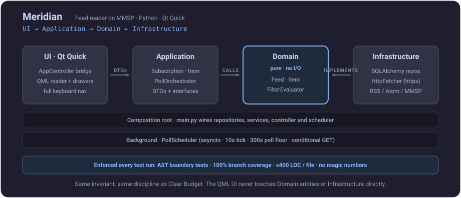

MMSP-native from the ground up, with full compatibility for every major feed format you already use.
Parses MFEED (MMSP JSON format) natively. Enforces MMSP/1.0 User-Agent, conditional GET (ETag / Last-Modified) and the 300 s poll floor per the spec. Read the spec →
Search new feeds by topic through Feedly's public search API, with topic suggestions from Wikipedia as you type, a result cap selector (10 to 200) and bulk subscribe behind a confirmation dialog. Feedly indexes RSS, Atom and podcast sources, so MFEED feeds are added by URL.
Per-feed MMSP Appendix A ABNF filters. The filter dialog surfaces existing terms as toggleable rows: no syntax knowledge required for common cases.
Conditional GET with ETag and Last-Modified. Rate-limit backoff, 300 s poll floor. An async asyncio scheduler that wakes every ten seconds and does nothing until a feed is due.
Mocha (dark) and Latte (light) with a single toggle. Theme preference persists across restarts. Amber focus ring on every focusable control.
content:encoded preferred over description so full article HTML is shown where available. Media player for podcast and video items built in.
A licence dialog holds still, descends at reading pace, holds at the end and rewinds, so you never have to wheel through one. The URL list shown before a bulk subscribe does the same once it overflows. Touch the surface and it stops, then resumes from where you left it rather than the top.
Every control reachable without a mouse. Tab wraps cleanly end to end. Space activates throughout and Enter almost everywhere, Left and Right move between sort chips and dialog footers, Escape closes drawers and dialogs.
File and view actions along the top, the donation button and the two licences along the foot. Every control is artwork rather than an emoji, so the row looks the same on all three platforms; each carries a tooltip that opens on hover and on keyboard focus alike.
Full subscription round-trip via JSON. A neutral examples/feeds_sample.json ships with the repo so you can bootstrap a reading list in seconds.
Select-all checkboxes, bulk remove, per-feed filter, edit and delete from the subscription manager. In-place list removal preserves scroll position.
No account, no sync, no telemetry and no server of ours. Your subscriptions and read state stay on your machine, in one SQLite file. Meridian talks to your feeds, the media they point at, (when you use discovery) Feedly's search and Wikipedia's topic suggestions and GitHub's releases API for the daily update check, which carries no identifier and nothing about you. One thing is worth naming beyond those: playing a YouTube item loads Google's own player in an embedded browser, so a video you watch is visible to Google just as it would be in a browser tab. JSON export and import moves a reading list between machines: the migration path, not live sync.
A quiet check against GitHub's releases API at launch and once a day: Download the right file for your platform, Skip This Version for good or Later. A manual check on the About dialog reports every outcome. Only a published release can prompt and a failed check on the automatic path says nothing at all.
A reference client has to be exemplary or the spec it implements loses authority. So MMSP polling semantics sit behind a pure domain, inside a four-layer architecture, UI to Application to Domain with Infrastructure implementing inward. AST tests and 100% branch coverage run on every build, so the behaviour the spec mandates is behaviour the code cannot structurally violate.
